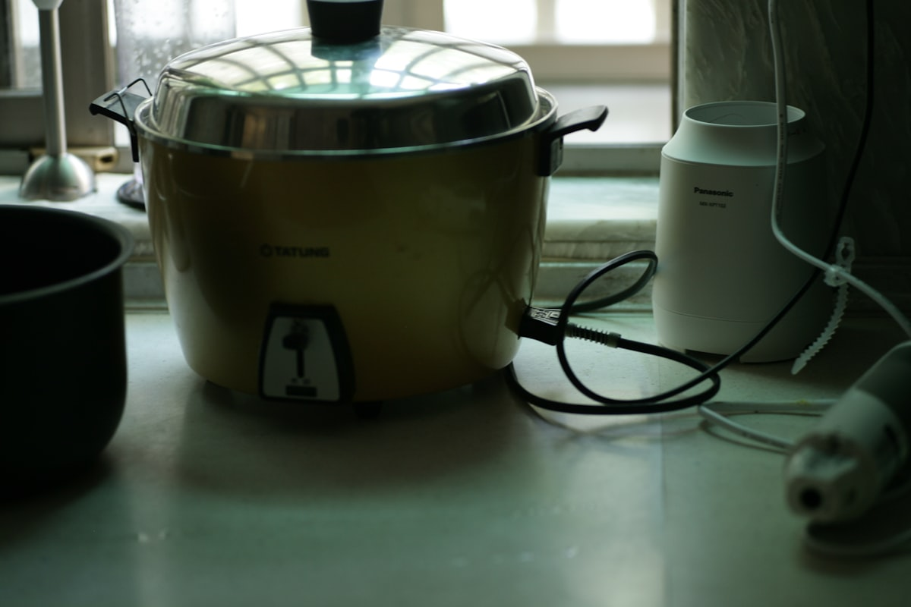

この記事には広告(アフィリエイトリンク)を含む場合があります。詳しくはこのサイトについてをご覧ください。
結論
- 日本の炊飯器(100V専用)をそのままオーストラリア(230V)で使うのは故障・発火のリスクがあり危険
- 持っていくなら「100-240V対応」の海外用炊飯器か、対応する変圧器とのセットが必要
- シェアハウス滞在・短期なら、現地のKmart等で安価な炊飯器を現地調達する方が合理的なことが多い
ワーホリの持ち物リストで意外と盲点になりやすいのが炊飯器です。「シェアハウスに炊飯器がない」「毎日パンやパスタだと飽きる」という理由で欲しくなる人は多いのですが、電圧の違いを知らずに日本の炊飯器をそのまま持っていくと、最悪の場合は故障や発火につながります。
なぜそのまま持っていけないのか
日本の家電は基本的に100V仕様で作られていますが、オーストラリアの家庭用電源は230V(許容範囲220〜240V程度)です。日本の炊飯器を変圧器なしでそのまま使うと、内部のヒーターに想定を大きく超える電圧がかかり、故障や火災の原因になります。
- 変圧器を使う場合: 炊飯器はドライヤーと並んで消費電力が大きい家電のため、対応できる変圧器自体が大きく重くなりがちで、荷物としてかさばる
- 海外対応(100-240V)モデルを使う場合: 変圧器なしでそのまま使えるが、日本国内向けの海外対応炊飯器は選択肢が限られる
持っていく/現地調達、どちらが向いているか
| タイプ | 向いている人 |
|---|---|
| 海外対応炊飯器を持っていく | 日本米・炊き加減へのこだわりが強い人、長期(1年前後)滞在予定の人 |
| 現地調達(Kmart、Big W、Target等) | シェアハウスで短中期滞在、荷物を増やしたくない人。$20〜40AUD程度から購入でき、帰国・移動時は譲渡や売却もしやすい |
持っていくメリット
- 使い慣れた炊き加減を再現しやすい
- 到着直後から自炊環境が整う
デメリット・注意点
- スーツケースの容量・重量を圧迫する
- 電圧非対応品を誤って持っていくと故障・発火のリスク
海外対応炊飯器のおすすめ
持っていく場合は、必ず「100-240V対応」の表記があるモデルを選んでください。
1
2
3
まとめ
炊飯器は「持っていくか、現地で買うか」で悩みがちですが、判断基準は電圧対応の有無と滞在期間です。短中期のシェアハウス生活なら現地調達、日本米への強いこだわりがあり長期滞在するなら海外対応モデルの持参、と考えるとシンプルに決められます。